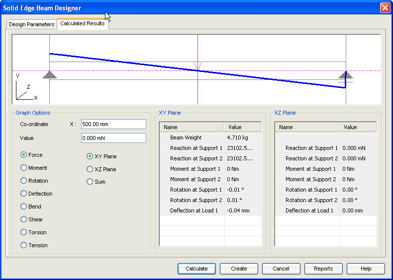

Beam Calculated Results tab
The Calculated Results tab provides the options you use to view the results and the graphical output. This tab has 3 areas:

- Graphic area
-
This area displays the graph for the selected graph option. Use the digitizer (pink line) to determine the value of the graph at any position.
- Graphic options
-
Use this area to select the graph to be displayed. The Coordinate - X gives the position of the digitizer and Value gives the corresponding value.
- XY Plane and XZ Plane
-
The results for beam are calculated in two planes, namely XY Plane and XZ Plane. Reaction at supports, rotation at supports and deflection at load points are some of the results you can review through this area.